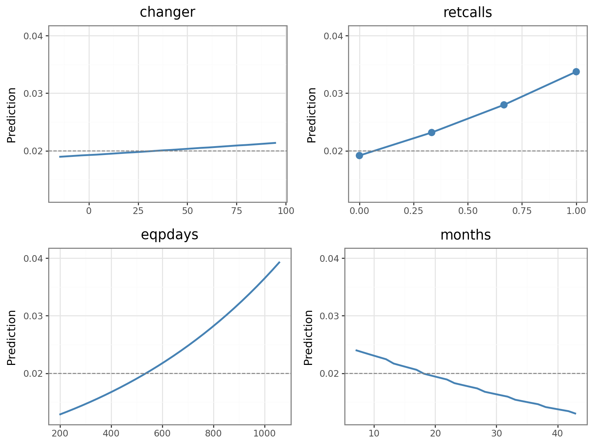
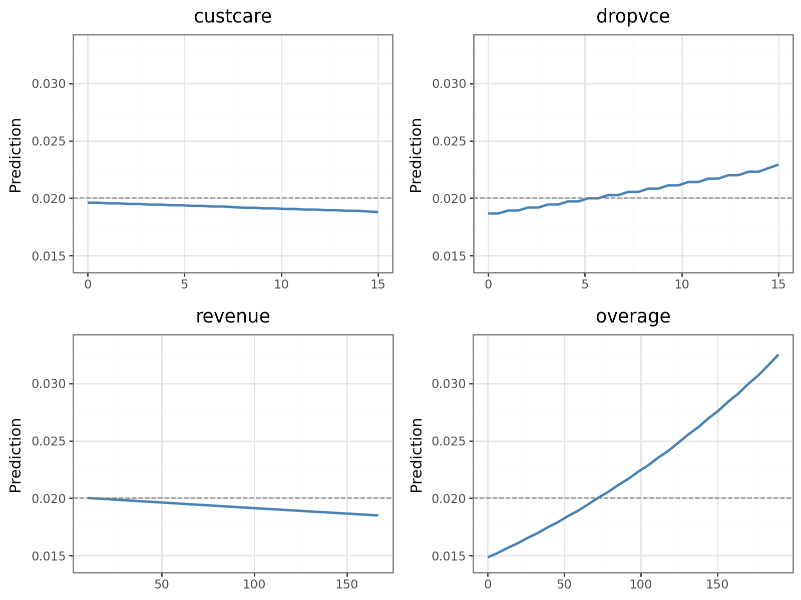

S-Mobile: Proactive Churn Management
The Business Problem
S-Mobile, a Singapore telecom with 1 million subscribers, was losing 2% of its base every month, a rate that compounds into millions in lost recurring revenue a year. The company didn’t just need to know who would churn; it needed to know which interventions were actually worth paying for.
What I Built
I trained a churn model on a 27,300-customer sample, using a 50% oversampling scheme with case weights (1:49) so predictions stayed calibrated to the real-world 2% churn rate. A weighted logistic regression (AUC 0.688) and a Random Forest (AUC 0.726) agreed closely on which customers were most at risk, which gave me confidence the drivers below were real signal rather than noise.
What Actually Drives Churn
Permutation importance on the full feature set surfaced four factors that matter far more than the rest: job/occupation type, equipment age, overage minutes, and credit standing.

Partial dependence plots then showed how each driver moves risk. Customers with older handsets, heavier overage charges, and repeated customer-service contacts churn at meaningfully higher rates, together touching over 30% of the subscriber base:


Turning Drivers Into Costed Programs: the Dollar Impact
A driver is only useful if it changes what the business does next. I designed three retention interventions and ran each through a 60-month CLV and breakeven model (40% margin, 7.44% annual discount rate), scaled to the full 1M-subscriber base:
| Program | Target driver | Net impact (5-yr, full base) | Verdict |
|---|---|---|---|
| Plan-upgrade outreach | Overage minutes | +$93M | Fund it |
| Handset upgrade subsidy | Equipment age | +$12M | Fund it |
| Refurbished-phone replacement | Refurbished handsets | Net-negative | Cut it |
That third result is the point of doing the math at all. The refurb-replacement idea sounded reasonable, but the subsidy cost more than the churn it prevented. Running the CLV numbers before committing budget kept S-Mobile from funding a program that would have lost money.
Skills Used
Random Forest · Logistic Regression · CLV & Breakeven Analysis · Python · Permutation Importance · Partial Dependence Plots